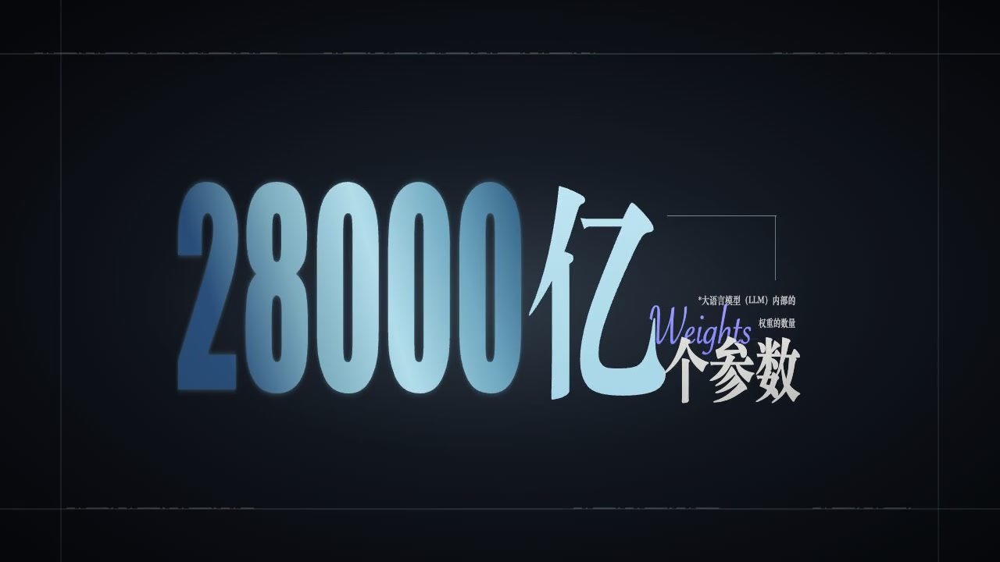

01 / 开场观点00:00—00:05
建议画面 · 标题卡
这一次，真正改变局面的，是计算能力。
匹配原因：适合做开场观点
一段视频，自动拆成一句一句；每句话配一张能替换的画面。
选一个视频就行。系统接着识别口播、按句切分，并匹配视觉预设。
点击选择本机视频。识别和分镜都在这里继续，
不用写提示词，也不用跳到别的页面。
上传、识别和制作都在同一页完成。
原片 02:18 · 已切成 18 句。下面是前两句的示例；每句上方是建议画面，下方是对应口播。
这一次，真正改变局面的，是计算能力。

投入规模比上一代增加了三倍。